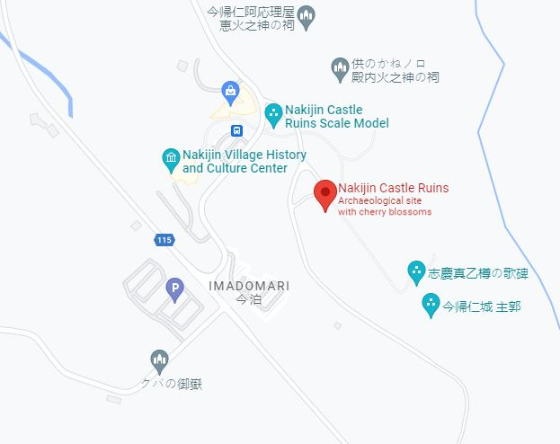

North - Hokuzan
Included in this section
- ⭐⭐⭐Nakijin Castle (UNESCO 972-003)
- Dimensions: 195 m x 370 m
- Constructed: 12 - 13th century
- GPS: 26.6909, 127.9300
- Elevation: 90 m
- UNESCO World Heritage Site (972-003)
- Large castle grounds, well maintained, good explanatory signs
- Stunning views
- Cherry trees カンヒザクラ(寒緋桜) blossom in Jan & Feb
- Iheya, Izena and Yoron Islands can be seen from here
- Virtual Reality experience, "MR The Battle of Nakijin", available with advanced reservation: https://select-type.com/rsv/?id=e0WRdJhXTCQ
- Distance: 90 km north of Naha / 65 km north of Okinawa City
- Car: Nakijin Castle Ruins, 5101 Imadomari, Nakijin, Kunigami District, Okinawa 905-0428, Japan (今帰仁城跡)
- Bus: From Naha Bus Terminal, take a Naha-Nago bus, then from Nago, take Bus #66 to Nakijin Castle Ruins (Nakijin Joseki)
- Parking: Free for about 150 cars and buses.
- Admission: 400¥ for adults, 300¥ students and free for preschoolers.
- Hours: 8 am - 6 pm Sep - Apr, and 8 am - 7 pm May - Aug.
- https://www.nakijinjoseki-osi.jp
Nakijin Castle (今帰仁城跡)
⭐⭐⭐ Great

Photo by Hiroaki Kaneko/CC SA 3.0
Castle Data
Points of Interest
Getting There and Parking
Where to Eat
Kishimoto Shokudo (元祖木灰沖縄そば きしもと食堂), 5 Toguchi, 本部町 Motobu, Kunigami District, Okinawa 905-0214, Japan. Hours: 11 am - 5:30 pm
Side Trip
Maps - Nakijin Castle

Map data ©2021 Google 
Map data ©2021 Google
Overview - Nakijin Castle
Built over the 12-13th centuries, it's at an elevation of 100m and covers an area of 195 x 370m. This is one of Japan's top 100 castles, and a UNESCO World Heritage site. Cherry blossoms in Jan and Feb.
On The Trail - Nakijin Castle
Visit the Nakijin Village Gusuku Information Center to purchase your ticket and pick up a guide pamphlet. The museum is included with your ticket. The "Nakijin Village (Museum) History and Cultural Center", has a restroom, souvenir store and small soba shop. With tickets in hand from the Gusuku Information Center, cross the road, and check out the outdoor topographic scale model of Nakijin Castle. The stone monument to the right of the model reads:
Nakijin Gusuku
This miniature shows the Nakijin castle at its most prosperous period between the middle of the 14th century and the beginning of the 15th century in the size of 1/100.
Shijima-jokaku
It was considered to be the place where the vassals lived. And the remains of excavation pillar building, stairs and stone pavement way were found here
Uushimi
It was considered to be the place of fighting training for castle soldiers. It was told that horses were bred at that time.
Syukaku
Soil and stone were buried inside of the stone wall built at the second period and The foundation stone was built at the third period.
Uumyaa Uutibaru
It was presumed that the southern side was used as an open space and the northern side was used as a living space.
Just to the right of the stone monument are some samples of stones used for wall creation. Follow the gravel path past the monument and scale model, it will cross the road, you'll see small “Route” signs to guide your way, as well as signs warning about the danger of climbing on the walls. After crossing the road, it may not be obvious, but you are actually passing through the exterior wall of Nakijin Castle, into the large 1st bailey, known here as the “Gaikaku” 外郭（がいかく）. Today the wall is a couple meters high in some spots, but it likely would have been up to 2 stories high when the castle was in its prime. Continuing along, the gravel path will split. Follow the left fork and on your left you'll see an artistic recreation in photographic tiles of a cooking area that was excavated. The description next to it reads:
During the 2007-2009 excavation survey, a squarely dug hole (fire pit) and surrounding six pillar holes were discovered. The insides of the square-shaped hole were burnt red by fire, and carbonized rice and wheat seeds were found in the bottom. From this, the remains were thought to have been used for cooking
The left fork continues on to a traditional prayer hut used by the Noro/Priestess. This place of worship is called the “Fui Dunchi” 古宇利殿内. The sign nearby reads:
Fui Dunchi
Because the name "Kouri" is pronounced "Fui" in the Okinawan dialect, this structure is called "Fui Dunchi." The small shrine faces northeast, in the direction of Kouri Island. Kouri is the only outer island that is a part of Nakijin Village and the Island's residents pray at this small shrine in August of the lunar calendar. Prayers are offered by the Noro Priestesses of Nakijin during the religious events of Imadomari. This structure was reconstructed based on old photos and relocated to this site in 2010.
Return to the main path, and you'll come to a small ticket kiosk, with a sign, “Will cut it here ticket”, and 3 stone monuments for the castle. The middle monument is for the World Heritage Gusuku Sites and Related Properties of the Kingdom of Ryukyu Nakijin-jo Site, and has an english translation. Make your way past the ticket kiosk towards the high castle walls and main gate or “Heiromon” 平郎門 . The gate was restored in 1958, notice the viewing ports on either side. After passing through, take a look through the ports, and notice how thick the walls are. You are now entering a 2nd bailey, on a cherry tree (sakura) path, you'll find this ultra picturesque (and sometimes filled with butterflies) when the cherry blossoms are blooming mid-January to mid-February. This path is a new addition, and after a few feet, on your left you'll see the Oushimi 大隅 area, which is bailey #3, horses were quartered here and soldiers could train with them. Continue down the cherry tree path and just before the stairs, you'll see a dirt path, known as the Kyūdō 旧道, or “Old Road”, which is the actual path before the wide cherry tree path was built. If you're wearing sensible shoes, take this to the top instead - it's not off limits, and both the stone staircase and the dirt path lead to the same place at the top. Hopefully you took the “Old Path”, there's a bit more shade here, and you'll see original stone walls, as you ascend the rustic path. Now at the top, you'll see the main path covered with gravel and to the top of the cherry tree path staircase.
Make your way around the top to the different areas, there's the Umiya 大庭（ウーミャ）or “Great Garden” that the main, north and south halls surrounded. The sign describing the area's purpose:
Umiya Court
It is believed that the Umiya court of Nakijin Castle played a central roles similar to the Una court of the Shurijo Castle, where political gatherings and religious ceremonies and rituals were held. It is thought that after ascending the stairs of Shichi-go-san (seven-five-three), the Umiya court was surrounded by Seiden (Main Hall) at the front center, the Nanden (South Hall) to the right, and the highest point to the north the remains of the Hokuden (North Hall). Remains of a structural foundation can still be seen today at the Hokuden site. The photograph shows an annual ritual, Gusuku-Umi, held in August of the lunar calendar. During this ritual, the Nakijin Noro priestess, that handles the ceremonies and rituals of Nakijin Gusuku offers prayers to the gods for the safety of the village, prosperity of the descendents, and the happiness of the world (known as Yugafu).
You'll see a large stone monument with poetry here as well, and, the marker reads:
Monument Inscribed with a Poem for Shigema Utudaru
Outline of the Poem: South of Nakijin Gusuku was the village of Shigema, where Utudaru, a woman of great beauty resided. People throughout the Kingdom walked about this maiden with beautiful black hair, and soon she was called Nakijin Ukami (goddess of Nakijin) and served as the concubine of the Sanhoku King. She lived at the castle with her days filled with happiness and without a worry. However, the King, who was advancing in age, was concerned as he and his Queen had not yet produced an heir to this throne. The Queen, as well as Shigema Utudaru, prayed constantly to be blessed with a child. Eventually, the Queen conceived a long-awaited child. The poem likens this event to that of an orange tree bearing fruit out of season, and a serene and peaceful time is portrayed with the happy cries of a child.
The Uchibaru 御内原（ウーチバル）sign explains it was an area cor the women of the court, it says:
Uchibaru
The location at a higher point on the northern side of the Hokuden (North Hall) site is called the Uchibaru. According to legend, this area was where the chambers of the court ladies were located, and the most important Utaki (also called Ibe, a sacred site) is also found here. The view from the northern margin of the Uchinbaru is particularly open, and most of the walls of the Nakijin-jo Site can be seen. The mountains of Kunigami, and the surrounding islands of Iheya and Izena can be also be viewed from this location. Especially on sunny days. Yoron Island (Oshima County, Kagoshima Prefecture) can be seen in the distance, which is 22 km away from Cape Hedo, the northernmost point of Okinawa Island.
There are multiple holy sites in the upper part of the castle, the Upper Utaki monument gives a good overview of utaki's and the purpose of the Upper Utaki being the holiest of sits being used for prayers for prosperity and security:
Upper Utaki
Utaki are sacred sites unique to Ryukyuan beliefs, where rituals and ceremonies are held to honor gods, ancestors, and natural forces. They are usually somewhat small and located in places that have a special natural feature, such as a grove of trees, a cave, spring, or unique arrangement of stones. The Tenchiji-Amachiji, also called the Upper Utaki, is the most important utaki at Nakijin, where the guardian god of the castle is believed to reside. In the past, ladies of the court offered prayers for the prosperity and security of the kingdom and for good harvests, and men were prohibited from entering the walled enclosure. Tenchiji-Amachiji is still used for worship today, with important ceremonies conducted twice a year. Here as elsewhere in Okinawa, thisutaki site is maintained and ceremonies performed br priestesses called noro, or kaminchu. Local residents frequently leave offerings and practice devotions as well. It is notable anc characteristic of Ryukyu castles that the highest and most prestigious location was devoted to spiritual rather than political or defensive purposes. In fact, some historians believe that the term gusuku, commonly used for castles, initially referred to a spiritual rather than a military stronghold. Please be respectful when visiting this and other utaki.
At the Soitsugi (Jonai Shitano) Utaki you'll see:
Soitsugi (Jonai Shitano-Utaki)
Within the Nakijin Castle Site are two Ibe, which are considered to be the most sacred of Utaki. The Soitsugi, which is located north-west of the Umiya Court, is noted in the historical documentation, Ryukyu-Koku Yuraiki, or the (Record on the ) Origins of the KIngdom of Ryukyu (1713) as “Jonai Shitano-Utaki'' or referred with the divine name of Soitsugino-Ishizu Oibe. During Gusuku Uimi, a religious ritual held in August of the lunar calendar, the Nakijin Noro Priestess offers prayers to the Soitsugi, asking for rich and prosperous harvests and other blessings. Together with the Tenchiji-Amachiji or “Jonai Ueno-Utaki '' and the Kami-Hasagi Site at the Uchibaru, it is revered as a sacred site of worship.
The sign next to the Tenchiji-Amachiji Utaki reads:
Tenchiji-Amachiji (Utaki Located in the Upper Area of the Castle Grounds)
Utaki refers to sacred sites where various rituals and ceremonies are held, and are unique to the Ryukyuan beliefs. It is believed that the Utaki is where the gods are, or where the gods come. The Tenchiji-Amachiji is the Utaki located in the southeastern area of the Uchibaru within the Nakijin Castle grounds, and is surrounded by low stone walls. In the Omoro-Soshi, the compendium of ancient Ryukyu songs and rituals, this site is referred to as the Kanahiyabu of Nakijin, and it is the most sacred worshiping site within Nakijin Gusuku, where the guardian god of the Castle is believed to be. The site is commonly referred to as Tenchiji-Amachiji, and it has been told that in the past, males were prohibited from entering this area, and ladies of the court offered their prayers for prosperity of the descendents, security of the kingdom, and good harvests. The Nakijin Noro priestess conducts the rituals for Upu-Uimi and Gusuku-Uimi held in July and August of the lunar calendar, respectively.
In the Shukaku 主郭 area, a monument to the God of Fire here reads:
Shrine of the God of Fire
It is a shrine of the God of Fire whom the Hokuzan Kanshu worshiped in the Ryukyu Kingdom period. Although the Hokuzan Kanshu withdrew to Shuri in 1665, the former site of the Hinukan was left and became a shrine. Even today, religious services of Imadomari called “Shimo Uimi”, held on August 10 of the lunar calendar, are conducted at locations such as the Hinukan Shirene for “Nakijin Nubui”, one of the ancestral rituals of a family clan which is a patrilineal kin group Okinawa.
The furthest (south-east corner) area was the Shijimajokaku 志慶真門郭（しげまじょうかく）which had four buildings for servants. A sign here describes it:
Shijimajokaku* Ward
This district called Shijimajokaku, is located in the ??? part of the ??? Excavation was carried out from 1960 to 1962. A stone path, which ??? ??? the land were leveled so that building could be constructed. The ruins of a building measuring 4m x 5m or 6m x 6m was found along with a fireplace. Since no clay tiles were found, it is thought that the roof was made from straw or wood, making it a "horitatebashira" style building. Stone path and stone steps were also found connecting the buildings to one another. Armor, ceramic items, ornaments, children's toys, and various other items were also discovered during this excavation which means that people of that time were living as ???. The stone walls were build by shaving the land and piling up natural stones. It should be noted that a Shigema gate was also located at the southern part of the district.
* There are translation differences on the monument, and on multiple English language websites. This monument translates 志慶真門郭（しげまじょうかく）as "Shijimajokaku", however the hiragana on the official website (https://www.nakijinjoseki-osi.jp) spells out "shigemajokaku"